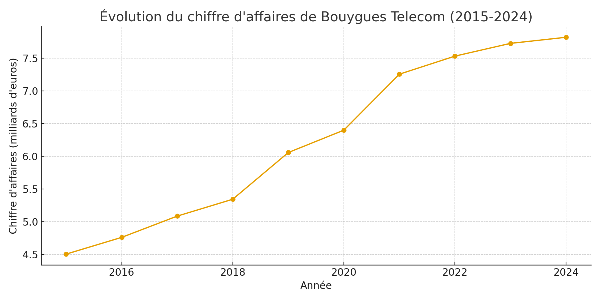
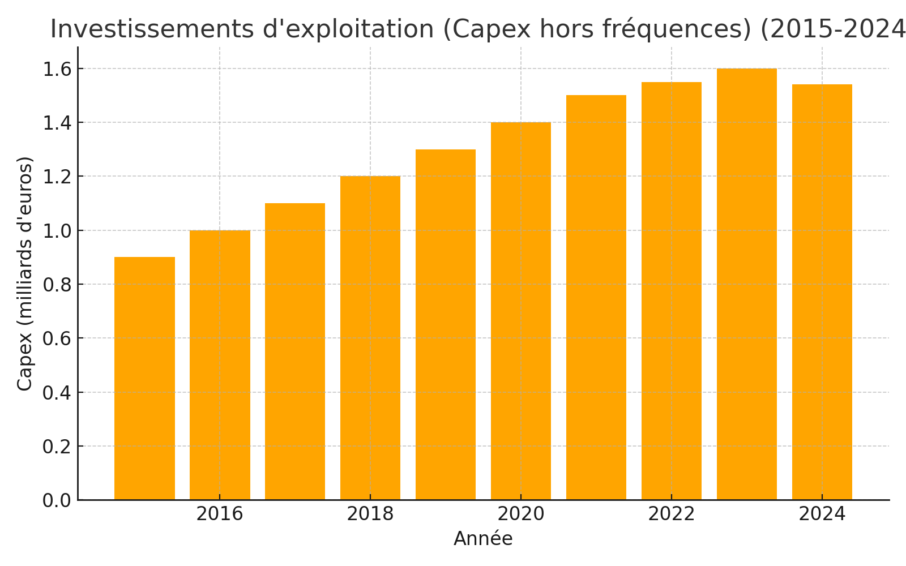
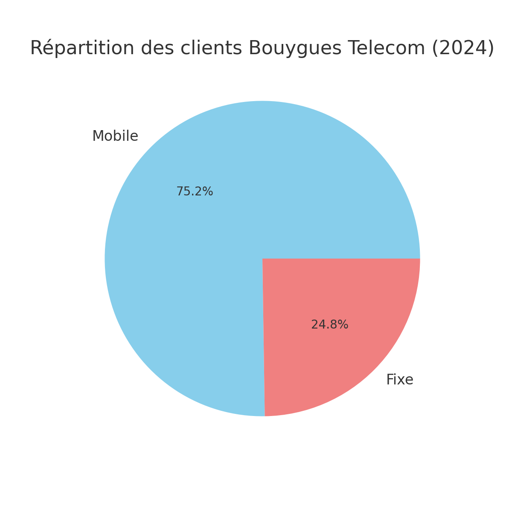
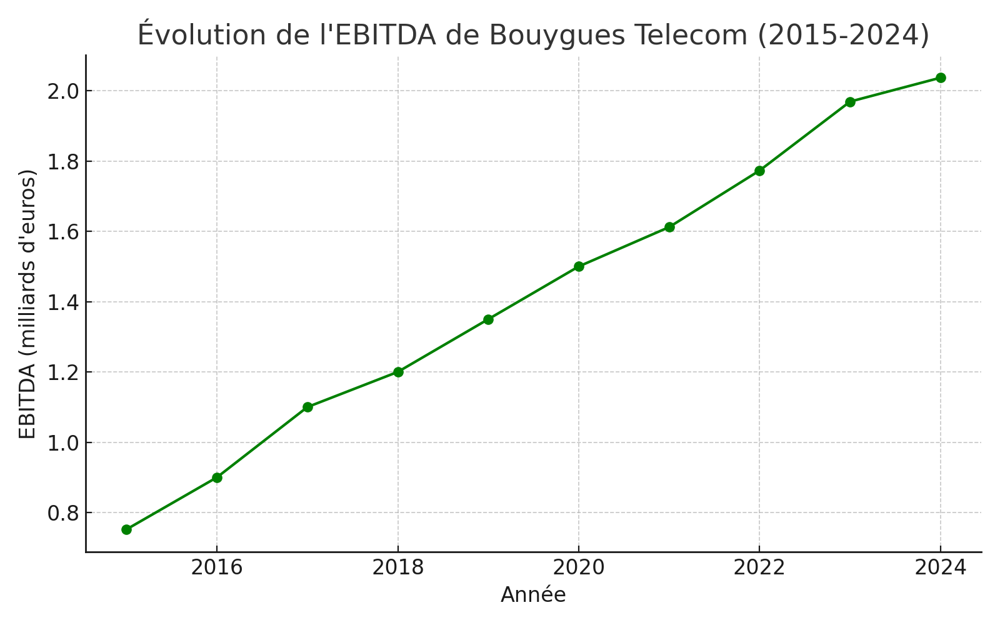
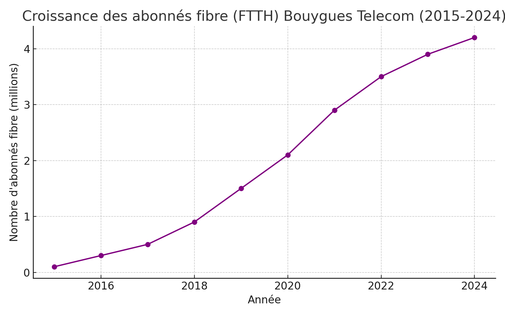

De sa position d'acteur français aux 1,5 milliard d'euros investis dans la fibre et la 5G, explorez l'économie de Bouygues Telecom : une croissance portée par l'innovation, un EBITDA en forte progression et une base d'abonnés record.
malgré une position de acteur français en chiffre d’affaires, Bouygues Telecom dispose d’une part de marché d’environ 12 %, se différenciant par sa qualité de service et sa stratégie d’innovation dans la fibre et la 5G.
Cette dynamique s’appuie sur des investissements soutenus (Capex) dans les réseaux mobiles et fixes, avoisinant chaque année 1,5 milliard d’euros. Ces efforts ont permis d’accélérer le déploiement de la fibre optique : le parc d’abonnés est passé de seulement 0,1 million en 2015 à plus de 4 millions en 2024.
En matière de clients, Bouygues Telecom compte environ 15,8 millions d’abonnés mobiles et 5,2 millions en fixe en 2024, confirmant une base solide et équilibrée.
Bouygues Telecom connaît une croissance régulière de sa performance économique. Son EBITDA (résultat opérationnel brut) est passé de moins de 1 milliard d’euros en 2015 à plus de 2 milliards en 2024, traduisant une rentabilité en nette progression.
La croissance des abonnés fibre (FTTH) de Bouygues Telecom a été spectaculaire entre 2015 et 2024. Elle est passée d'un niveau négligeable à plus de 4 millions d'abonnés en 2024. Cette forte progression est le résultat d'une stratégie d'investissement réussie dans le déploiement de la fibre optique. Le groupe consolide ainsi sa position d'acteur majeur sur le marché du fixe.
